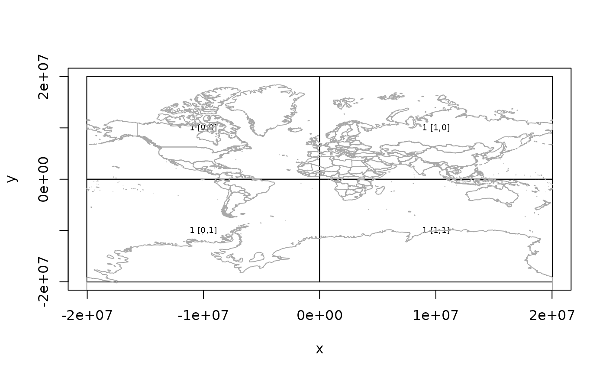

Create a new plot of tile rectangles, or add to an existing plot.
plot_tiles(
x,
...,
add = FALSE,
label = TRUE,
cex = 0.6,
add_coast = TRUE,
include_zoom = TRUE
)
tiles_to_polygon(x)tiles as create by ceramic_tiles()
arguments passed to graphics::rect()
add to an existing plot?
include text label?
relative size of text label if drawn (see text())
include a basic coastline on the plot?
include zoom level with text label if drawn?
plot_tiles() is called for its side-effect, a plot, and returns NULL invisibly.
tiles_to_polygon returns a wk rct vector
The extent ('xmin', 'xmax', 'ymin', 'ymax') is used directly to draw the tiles so must be in the native Mercator coordinate system used by most tile servers.
if (!is.null(get_api_key())) {
get_tiles_zoom(zoom = 1)
tiles <- ceramic_tiles(zoom = 1)
plot_tiles(tiles)
}
#> Preparing to download: 4 tiles at zoom = 1 from
#> https://api.mapbox.com/v4/mapbox.satellite/
